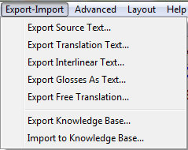
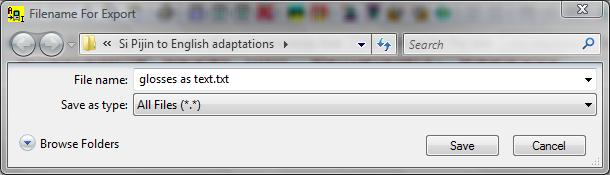

Click on the Export-Import menu .
The menu opens and the Export Glosses as Text… item should be usable and not "grayed out."

If the item is not usable, there is no document in the Main Window . You need to Open a document before proceeding.
Click Export Glosses as Text...
Adapt It opens Export Document dialog.

This
dialog allows you to choose the type of file you will generate. Be
sure to read the text for each option.
Do one of the following:
To export a Standard Format Text file, click on the Standard Format Text file (.txt) option button if it is not already selected. This option is the default.
To export a Rich Text Format file, click on the Rich Text Format file (.rtf) option button.
If desired, click Export Filter/Options to determine which filters to apply. See Export filter options for more information.
The Export Filter/Options dialog allows you to control the suppression of standard format markers and the placement of certain information in the RTF documents.
After you close the Export Filter/Options dialog, Adapt It returns you to the current dialog and you must select one of the two options above to continue.
Click OK (Or Cancel to stop the process)
Adapt It opens a Save As dialog box.

In the File
name
text box, it suggests the filename new source text and
with the filename extension of either txt or rtf. The filename
extension is determined by the option you chose in step 3.
If desired, change the filename in the File name text box.
Check the filename extension shown in the Save as type text box.
If the proper filename extension is not shown, click the Down arrow button Select the proper extension.
Click Save (or Cancel to stop the process).
If this file name has not been used before, Adapt It saves the file and returns to the Main Window .
If the file already exists, Adapt It opens a message box telling you that file exists and asks if you want to replace it.
Adapt It creates the new file with your filename and the filename extension.
Click Yes (or No to return to the Save As dialog).